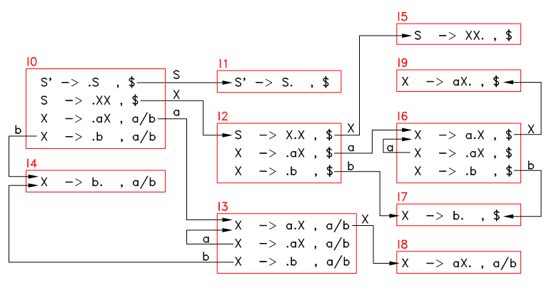
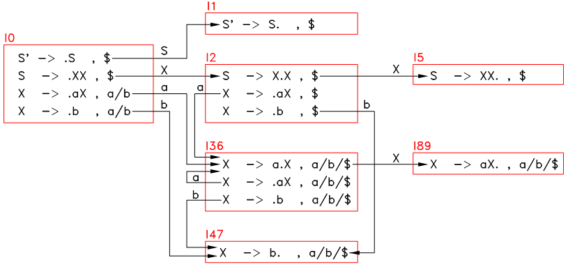

LR(0) 分析法要求语法的状态中不能有多条可折叠形态、且不能同时有可折叠形态和不可折叠形态，这是为了避免 reduce/reduce 冲突和 shift/reduce 冲突，此限制条件相当强，导致 LR(0) 的适用范围非常小。
事实上，只要对 LR(0) 法做一个很小的改进，就可以将这个限制条件去掉非常大的一部分。
这个可改进的地方就在于： LR(0) 法在执行 reduce 动作的时候没有利用下一个读入的符号的信息。
即便一个状态中含有多条可折叠形态，如： I = { “A -> u.” ; “B -> v.” } ，那么只要 Follow(A) 和 Follow(B) 不相交，就可以利用下一个符号 a 来选择折叠时需应用的产生式，如果 a 属于 Follow(A) ，那就 reduce “A -> u” ，如果 a 属于 Follow(B) 那就 reduce “B -> v” 。
shift/reduce 冲突同样可能避免，若一个状态中含有可折叠形态，也含有不可折叠形态，如： I = { “A -> u.” ; “B -> v.w” } ，那么只要 Follow(A) 和 First(w) 不相交，那也可以利用下一个符号 a 来选择需要执行的动作，如果 a 属于 Follow(A) ，那就 reduce ，如果 a 属于 First(w) 那就 shift 。
按以上思路，可以对 LR(0) 法进行一个小小的改进。但是还可以更进一步的，在形态中就绑定需要的下一个符号的信息，将上一章中的形态的格式改进一下，改进成下面这样的格式：
A –> X1 ... Xi • Xi+1 ... Xn , a
上面这个形态代表着这样的解析状态：目前栈上的符号为 X1 ... Xi ，期待遇到 Xi+1 ... Xn 这一系列的符号，并且只有 Xn 后读入的终结符是 a 的时候才执行 reduce 动作。这个 a 被称为 预测先行（lookahead） 。
使用这种格式的形态的 LR 解析法称为 LR(1) 分析法，括号中的 1 表示需要 1 个 lookahead ，也就是只利用下一个读入符号的信息。LR(1) 的构造过程和 LR(0) 的构造过程几乎一样，以下仅介绍二者不同的地方。
新格式形态的后继形态、延伸形态：
后继形态（successor configuration） ：形态：
C = [ A -> X•YZ, a ]遇到符号 Y 的后转移到形态：
C’ = [ A -> XY•Z, a ]C’ 称为形态 C 遇到符号 Y 的后继形态，记为 NEXT(C, Y)。
延伸形态（extended configuration） ： 若一个形态 C 的黑点后面是非终结符 B ，即：
C = [ A -> u.Bv, a ]且有： B -> w ， b ∈ First(va) 。则形态：
C’ = [ B -> .w, b ]是形态 C 的延伸形态。也就是说， C’ 中的产生式左边的非终结符就是 C 中黑点后面的非终结符，且 C’ 中的 lookahead 是 First(va) 中的一个符号（其中 v 是形态 C 中 B 后面的符号串， a 是形态 C 的lookahead）。
例如：
若 C = [ A -> b.BDd, a ] ，且 B 和 D 的产生式为： B -> c ，D -> e | f ，则 First(Dda) = {e, f} ，因此形态：
[ B -> .c, e ] 和 [ B -> .c, f ]都是 C 的延伸形态。
为什么 C’ 中的 lookahead 是 First(va) 中的符号呢？我们再观察一下形态 C ：
C = [ A -> u.Bv, a ]这个形态表明目前栈上的符号串是 u ，期待遇到符号 B ，再遇到符号串 v ，最后遇到 a 时才能折叠。因此，要折叠形态 C’ 得到符号 B ，遇到的终结符 b 必须得是 C 中的 B 后面的终结符，也就是 First(v) ，但如果 First(v) 中含有 ε 呢，这时就一定得遇到符号 a 才能折叠。因此： b 必须得是 First(va) 中的符号。
进一步，若 C’’ 是 C’ 的延伸形态，则 C’’ 也是 C 的延伸形态。这里再次强调一下：延伸的方向是单向的。
新格式形态的相关操作和上一章的几乎是一模一样的：
形态集合的闭合（closure of a configurating set） ：闭合操作步骤（设集合名为 I）：
（1） 遍历 I ，对 I 中的每一条黑点后是非终结符的形态 [ A -> u.Bv , a ] ，对 B 的每一个产生式 B -> w 、以及 First(va) 中的每一个符号 b ，将形态 [ B -> .w, b ] 添加进 I 。
（2） 重复（1），直到不再出现新的形态。
闭合操作的得到的新集合 I’ 仍然称为原集合 I 的 闭包集合 ，记为 CLOSURE(I) 。
上下文无关语法的起始状态（start state of a CFG） ： 若一个 CFG 的起始符号 S 的所有产生式为 S -> u1 | u2 | ... | un ，且 S 不位于任何产生式的右边，则其起始状态（记为 I0 ）是以下形态的集合的闭包集合，即：
I0 = CLOSURE( { [S->.u1, $], [S->.u2, $] , ... [S->.un, $] } )后继状态（succesor state） ： 当状态 I 遇到符号 X 时，可能转移到另一个状态，称此状态为状态 I 遇到符号 X 的后继状态，记为 NEXT(I, X) ，按下式计算：
NEXT(I, X) = CLOSURE( { NEXT(C, X) | C ∈ I } )NEXT(I, X) 的计算步骤为：
（1） 置 I’ 为空集。
（2） 遍历 I ，对 I 中每一条形态 C ，若 NEXT(C, X) 存在，则将 NEXT(C, X) 加入 I’ 。
（3） 对 I’ 进行闭合操作。
注意，NEXT(I, X) 可能为空集。
来看一个简单的例子吧：
0) S' –> S
1) S –> XX
2) X –> aX
3) X –> b
首先算出所有符号的 first set ： First(S) = First(S’) = First(X) = {a, b} 。
起始状态 I0 = CLOSURE( { “S’ -> .S , $” } ) ：
I0:
S' –> .S , $
S –> .XX , $
X –> .aX , a/b
X –> .b , a/b
上面的 “X –> .aX , a/b” 是两条形态 “X –> .aX , a” 和 “X –> .aX , b” 的简写。
还是按上一章的步骤，对语法中的所有符号 X （S’, S, X, a, b） ，求出 I0 遇到 X 的后继状态 I1 = NEXT(I0, X) ，若 I1 不是空集，则将其添加到状态转移表中，然后不断重复，直到无法生成新的状态，最终的状态转移表的图形如下：
图12.1 状态转移图
构造动作表 M 的步骤也和上一章的大致一样， M 中的 M[I, X] 表示栈顶状态为 I ，下一个符号为 X 时所应采取的动作，按以下情况确定：
（1） NEXT(I, X) 存在（设为 I’）、 X 为终结符： M[I, X] = shift I’ ；
（2） NEXT(I, X) 存在（设为 I’）、 X 为非终结符： M[I, X] = goto I’ ；
（3） I 中含有形态 [ A -> X1 X2 ... Xn • , X] ，有以下两种情况：
（3.1） A != S 或 X != $ ： M[I, X] = reduce A -> X1 X2 ... Xn ；
（3.2） A == S 且 X == $ ： M[I, X] = accept ；
（4） 其他所有情况： M[I, X] = deny 。
按以上步骤以及图12.1，构造出的动作表 M 如下，其中 M[I, X] 为空白的表示 deny 动作：
| a | b | $ | S | X | |
|---|---|---|---|---|---|
| I0 | shift I3 | shift I4 | goto I1 | goto I2 | |
| I1 | ACCEPT | ||||
| I2 | shift I6 | shift I7 | goto I5 | ||
| I3 | shift I3 | shift I4 | goto I8 | ||
| I4 | reduce X–>b | reduce X–>b | |||
| I5 | reduce S–>XX | ||||
| I6 | shift I6 | shift I7 | goto I9 | ||
| I7 | reduce X–>b | ||||
| I8 | reduce X->aX | reduce X->aX | |||
| I9 | reduce X->aX |
构造出动作表后，LR(1) 解析流程和 LR(0) 是一样的，详见上一章，下面对句子 “baab” 进行解析，全过程如下：
| Sym-Stack | State-Stack | X | x Remaining-Input | Parse-Action | |||
|---|---|---|---|---|---|---|---|
| I0 | b | b aab$ | M[I0,b] = shift I4 | ||||
| b | I0 I4 | a | a ab$ | M[I4,a] = reduce X->b | |||
| I0 | X | a ab$ | M[I0,X] = goto I2 | ||||
| X | I0 I2 | a | a ab$ | M[I2,a] = shift I6 | |||
| Xa | I0 I2 I6 | a | a b$ | M[I6,a] = shift I6 | |||
| Xaa | I0 I2 I6 I6 | b | b $ | M[I6,b] = shift I7 | |||
| Xaab | I0 I2 I6 I6 I7 | $ | $ | M[I7,$] = reduce X->b | |||
| Xaa | I0 I2 I6 I6 | X | $ | M[I6,X] = goto I9 | |||
| XaaX | I0 I2 I6 I6 I9 | $ | $ | M[I9,$] = reduce X->aX | |||
| Xa | I0 I2 I6 | X | $ | M[I6,X] = goto I9 | |||
| XaX | I0 I2 I6 I9 | $ | $ | M[I9,$] = reduce X->aX | |||
| X | I0 I2 | X | $ | M[I2,X] = goto I5 | |||
| XX | I0 I2 I5 | $ | $ | M[I5,$] = reduce S–>XX | |||
| I0 | S | $ | M[I0,$] = goto I1 | ||||
| S | I0 I1 | $ | $ | M[I1,$] = ACCEPT |
和 LR(0) 分析法相比， LR(1) 利用了 lookahead 的信息后，其解析力量和适用范围有了质的飞跃，一个状态中可以同时含有可折叠形态和不可折叠形态（只要可折叠形态的 lookahead 不和不可折叠形态中黑点后面的符号冲突），也可以同时含有多条可折叠形态（只要这些可折叠形态的 lookahead 不相互冲突）。
LR(1) 分析法对语法的要求为：
（1） 起始符号 S 不能位于任何产生式的右边；
（2） 从此语法的起始状态开始生成的所有状态中：
（2.1） 任何一个状态不能同时含有 [ A -> u.aw , c ] 和 [ B -> v. , a ] ；
（2.2） 任何一个状态不能同时含有 [ A -> u. , a ] 和 [ B -> v. , a ] 。
以上的（2.1）将引起 shift/reduce 冲突，（2.2）将引起 reduce/reduce 冲突。一般语言的语法中很少会出现（2.2）的情况，而对于（2.1），在大部分情况下可以通过引入 优先级 来解决（见下一节）。
满足以上要求的语法被称为 LR(1) 语法，判断一个语法是否是 LR(1) 语法的方法就是构造其动作表，若构造过程中没有发现冲突，也就是表中的任何元素 M[I, X] 最多只有一个动作，那么此语法就是 LR(1) 语法。
大部分情况下， LR(1) 解析过程的 shift/reduce 冲突可以通过引入符号的优先级来解决。具体方法为：
（1） 定义某些符号的优先级以及结合方式；
（2） 当构造 LR(1) 的过程中出现了 shift/reduce 冲突时，即某个状态 I 中同时还有 [ A -> u.aw , c ] 和 [ B -> v. , a ] ，若已定义符号 a 的优先级，且符号串 v 中至少有一个已定义优先级的符号，则可通过以下原则确定 M[I, a] 的动作：
（2.1） 找到 v 中最右边的、已定义优先级的符号（也就是 v 中离 a 最近的一个已定义优先级的符号），假设为 b ；
（2.2） 若 a 的优先级 低于 b 的优先级，则： M[I, a] = reduce B -> v ；
（2.3） 若 a 的优先级 高于 b 的优先级，则： M[I, a] = shift NEXT(I, a) ；
（2.4） 若 a 的优先级 等于 b 的优先级，则根据 a 和 b 的结合方式：
（2.4.1） 若 a 和 b 都为左结合，则 M[I, a] = shift NEXT(I, a) ；
（2.4.2） 若 a 和 b 都为右结合，则 M[I, a] = reduce B -> v 。
来看一个简单的例子，语法为：
0) S -> E
1) E -> E + E
2) E -> E * E
3) E -> id
first(S) = first(E) = id
所有的状态及转移关系见下：
I0: I1: I2:
Configurations: Configurations: Configurations:
S -> . E , $ S -> E . , $ E -> id . , +/*/$
E -> . E + E , +/*/$ E -> E . + E , +/*/$ Actions:
E -> . E * E , +/*/$ E -> E . * E , +/*/$ + : reduce E -> id
E -> . id , +/*/$ Actions: * : reduce E -> id
Actions: + : shift I3 $ : reduce E -> id
E : goto I1 * : shift I4
id : shift I2 $ : reduce S -> E
I3: I4:
Configurations: Configurations:
E -> E + . E , +/*/$ E -> E * . E , +/*/$
E -> . E + E , +/*/$ E -> . E + E , +/*/$
E -> . E * E , +/*/$ E -> . E * E , +/*/$
E -> . id , +/*/$ E -> . id , +/*/$
Actions: Actions:
E : goto I5 E : goto I6
id : shift I2 id : shift I2
I5: I6:
Configurations: Configurations:
E -> E + E . , +/*/$ E -> E * E . , +/*/$
E -> E . + E , +/*/$ E -> E . + E , +/*/$
E -> E . * E , +/*/$ E -> E . * E , +/*/$
Actions: Actions:
+ : shift I3 / reduce E -> E + E + : shift I3 / reduce E -> E * E
* : shift I4 / reduce E -> E + E * : shift I4 / reduce E -> E * E
$ : reduce E -> E + E $ : reduce E -> E * E
注意状态 I5 和 I6 中都出现了两个 shift/reduce 冲突。以 I5 为例，它同时有以下两条形态：
1) E -> E + E . , *
2) E -> E . * E , x
上面第一条形态的 lookahead 和第二条形态中黑点后面的终结符都是 * ，因此当它遇到一个 * 时，可以执行 shift I4 ，也可以执行 reduce E -> E + E 。
现在按前面介绍的方法来确定该执行的动作。首先定义符号 * 和 + 的优先级分别为 0 和 1 （数字越小优先级越高），且定义两个符号都是左结合的。
再来看上面第一条形态，其产生式右边的符号串为 E + E ，这个符号串里最右边的、且定义了优先级的符号就是 + ，其优先级为 1 。而此形态的 lookahead （也就是 * ）的优先级为 0 ，高于 + 。因此，选择的动作为 shift 。
再按上面的方法消除其他 shift/reduce 冲突，确定 I5 和 I6 的动作如下（其中方括号内的是被放弃的动作）：
I5: I6:
Configurations: Configurations:
E -> E + E . , +/*/$ E -> E * E . , +/*/$
E -> E . + E , +/*/$ E -> E . + E , +/*/$
E -> E . * E , +/*/$ E -> E . * E , +/*/$
Actions: Actions:
+ : reduce E -> E + E [shift I3] + : reduce E -> E * E [shift I3]
* : shift I4 [reduce E -> E + E] * : reduce E -> E * E [shift I4]
$ : reduce E -> E + E $ : reduce E -> E * E
LL(1) 分析法的解析过程中，在挑选产生式的时候只利用下一个读入符号（lookahead）的信息，而 LR(1) 分析法不仅仅是利用下一个读入符号的信息，事实上，它几乎利用了前面读入过的所有的符号的信息。 LR(1) 分析法的解析力量和适用范围远大于 LL(1) 分析法，在引入符号优先级解决常见的 shift/reduce 冲突情况后，它可以解析目前几乎所有的程序语言。
到了这里，可以圆满的回答上一章最后的两个问题了：
如何找出可行的折叠？ 答案：利用状态和形态，当转移到一个含可折叠形态 [ A -> u. , a ] 的状态、且下一个读入符号是 a 时，就可以执行一次可行的折叠了。
有多个可行的折叠怎么办？ 答案： 若采用 LR(1) 分析法，则很少会出现这种情况，且可以比较容易的将语法改写成 LR(1) 语法。
从前面的内容可以看出， LR(1) 分析法的构造过程十分复杂，且状态和形态的数量都非常之多，即便是本章第一节的仅仅含 4 个产生式的如此简单的例子，也多达 9 个状态和 27 条形态，如下：
图12.2 状态转移图
上面这个图中， I3 和 I6 几乎是一样的，I4 和 I7 、以及 I8 和 I9 也非常的相似，可以将这样的状态 merge 起来，形成下面这样的状态转移表：
图12.3 状态转移图
可以看出 merge 后的状态总数少了 3 个，可节省动作表的空间，解析速度也有较大的提高。这种将相似状态 merge 起来的分析法称为 LALR(1) 分析法，这是很多编译器所采用的分析方法。具体的 merge 算法比较复杂，本文档就不介绍了，因为 LALR(1) 分析的基本构造流程和解析流程和 LR(1) 分析法是一样的。
第 12 章完
{kind=link}
{kind=link}